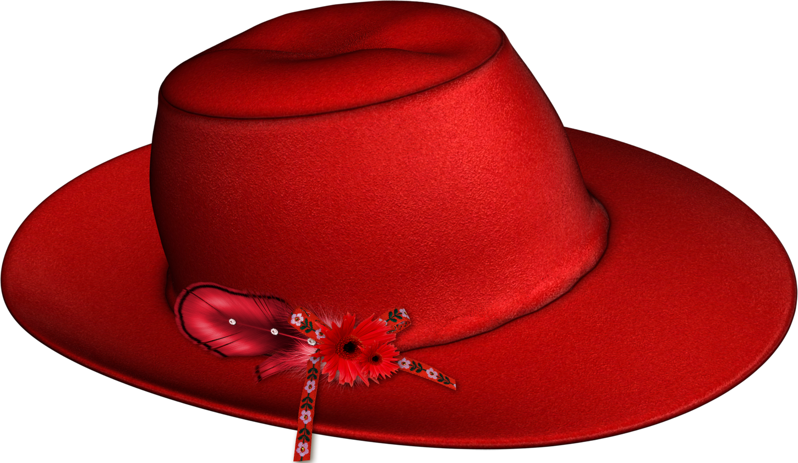
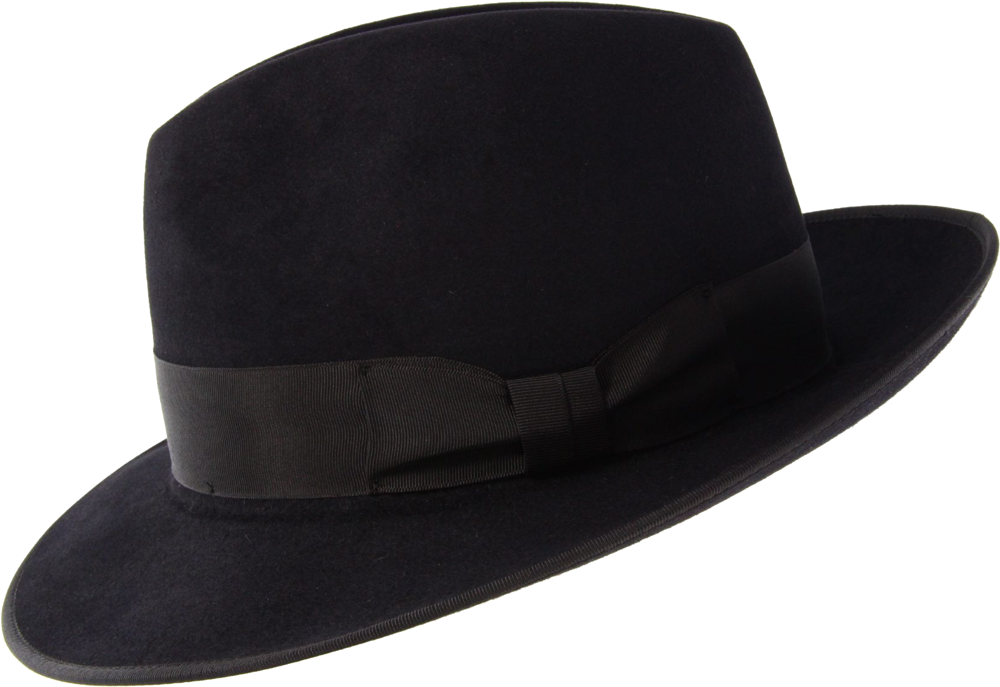
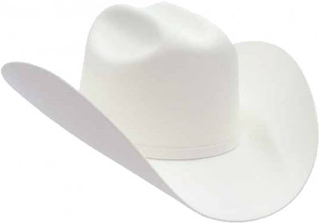
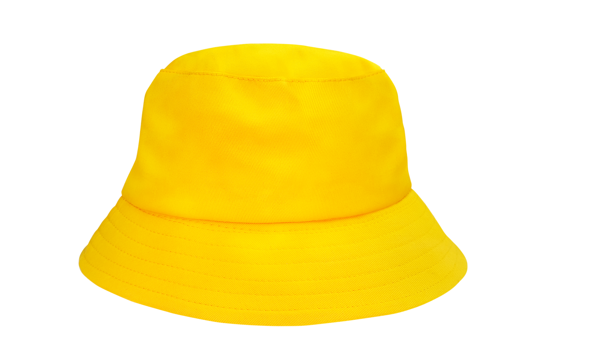

Sombreros
Los sombreros son una metodología que nos ayda a abordar los problemas y generar ideas desde diferentes
perspectivas.

El sombrero rojo representa las emociones y sentimientos. Permtite expresar intuiciones y reacciones sin
necesidad de justifiación.
Aquí algunas de las reacciones de nuestros compañeros:
- Profundo
- Triste
- Espiritual
- Intrigante
- Impsionante
- Sensorial

El sombrero negro se enfoca en la crítica y el análisis de riesgos. Nos ayuda a identificar ventajas y
desventajas.
Nuestros compañeros opinaron:
- Falta de documentación científica sobre la psicología
- El duelo se puede afrontar de distintas formas
- El nombre original, penamiento, es feo
- Podría ofender a un público sensible
- Falta de introducción

El sombrero blanco se centra en los hechos y la información para tener un punto de vista objetivo.
Se
propuso un posible fallo con los datos dados:
- En la habitación de la ira hay un puzzle en el cual tras intentar abrir una
puerta con todas la llaves que hay en el suelo, el jugador debe de romper la pared con un martillo para
completar el puzzle. La duda que surgió fue ¿Como se dará cuenta el jugador de tiene que romper la pared
y como?

El sombrero amarillo se centra en lo positivo de la idea. Da un pensamiento constructivo y generativo.
Las ideas positivas que se hablaron fueron:
- El juego te hace pensar
- Te hace sentir
- Te cambia la forma de pensar
- Puede ser una buena herramienta psicológica
- Puede ayudar a superar una perdida
- Es mśa profundo que lo normal
- La temática es perfecta